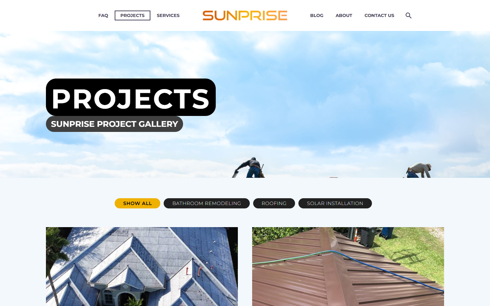
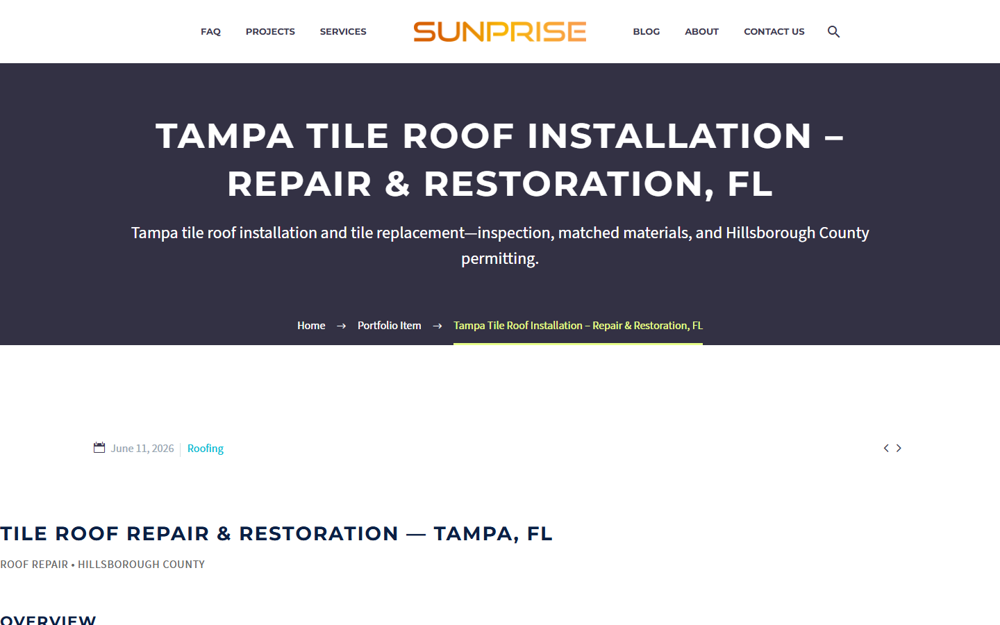
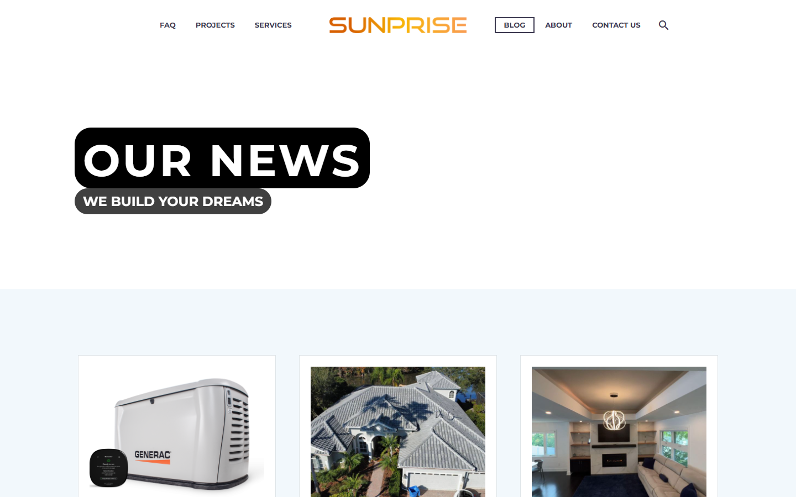
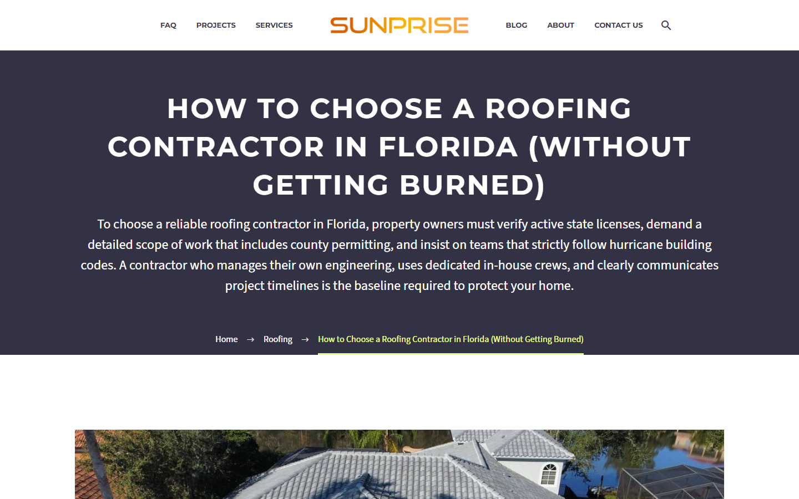

I migrated business files, email and web infrastructure, built the WordPress site, and configured the team’s phone system—connecting delivery, continuity and discovery.
2+ TBbusiness files and data · substantial email transfer alongside
~2 weeksplatform migration and DNS cutover
No lossdata, files and email · spreadsheets intact
Microsoft 365 → Google Workspace · GoDaddy → Namecheap · Webflow → WordPress
Actual homepage, captured from the isolated local restoration of the archived WordPress site.
THE CHALLENGE / THE RESPONSE
A connected migration under pressure.
Moved more than 2 TB of business files and data, alongside a substantial email transfer, in approximately two weeks. No data, files or email were lost; spreadsheets remained intact.
01 / DIAGNOSE
Resolve DNS issues
Transfer time accounted for much of the schedule; GoDaddy DNS response time affected the final stretch. Provider support and phone coordination helped resolve the cutover. DNS-Sentinel ↗ supported the diagnosis of domain and email configuration.
02 / MIGRATE
Preserve business data
Migrated images, contracts, PDFs, spreadsheets and other business data, plus email beyond OneDrive files. Data, files and email were preserved; spreadsheets remained intact.
03 / PHONE SYSTEM
Connect the team
Set up Zoom Phone VoIP for multiple people, managed call routing, and created call-menu logic and recordings.
04 / BUILD & MEASURE
Establish discovery
Build service and location pages, project and editorial content, and an analytics foundation. The recorded WordPress period includes 195 organic-search sessions and quote inquiries from people who found the business through organic Google searches.
The new website and Facebook activity were requested within the last year. Earlier web-presence longevity cannot be established, and the prior Webflow site had no comparable Google Analytics baseline.
01 / PAGE SYSTEM
A broad contractor site with clear paths.
The restored homepage leads with Florida remodeling. Its centered logo navigation links to FAQ, Projects, Services, Blog, About, and Contact Us.
50 published records
Service, location and company pages
13 published posts
Roofing, remodeling and home systems
30 published records
Projects and detailed work narratives
Archive inventory includes demo and operational page and portfolio records.
PRIMARY JOURNEY
Understand the work
Home, About, Services, Our Projects, Blog, FAQ, Contact Us, and Warranty pages support exploration before an inquiry.
SERVICE DEPTH
Find a relevant service
Remodeling, roofing, electrical, insulation, generators, and solar are presented through dedicated pages.
LOCAL DISCOVERY
Find a service by area
The archive includes location and service landing pages for Florida markets. These show content structure, not proven search ranking.
02 / PROJECT GALLERY
The actual portfolio layout.
The restored Projects page uses a large photographic hero, category filters, and a two-column image grid. Visible filters include Bathroom Remodeling, Roofing, and Solar Installation.

Actual Projects archive from the local restoration. Examples below the fold cover roof installations and bathroom remodeling.

Individual Tampa roofing project. Beneath this title and summary, the page is organized into overview, work completed, outcome, and local notes.
The 30 portfolio records include demo and other non-gallery content. Portfolio counts include records beyond the visible project gallery.
03 / EDITORIAL
The blog as it was built.
The archive has 13 published posts. The restored blog displays a headline banner and image-led article cards with dates, summaries, and “Read more” links.

Actual Blog archive from the local restoration. Visible topics include generators, roofing, and remodeling.

Individual roofing article. Its body uses sections on red flags, evaluation, and construction standards; the restored markup includes a description and canonical URL.
ROOFING
How to Choose a Roofing Contractor in Florida
The article uses a title, summary, and sections on red flags, evaluation, and construction standards.
REMODELING
Florida Homeowner’s Guide to a Stress-Free Remodel
Editorial content explains process and expectations alongside service pages.
HOME SYSTEMS
Generac Standby Generator Florida
Generator articles broaden the editorial mix beyond solar and roofing.
04 / TOOLS & ATTRIBUTION
Premium, free, and custom parts.
The backup’s active-plugin record identifies the tools below. Their creators retain their own brands and licenses; this case study links to the original products.
Original page layouts, content structure, portfolio organization, and private operational integrations sit alongside the third-party stack. The public case study can describe these without distributing private code or customer data.
Installed packages stay in the private source backup. This case study links to product owners and does not redistribute premium themes, plugins, or licensed media.
05 / MEASURED ACTIVITY
A short window of recorded activity.
Google Analytics recorded sessions from July 19 through October 5, 2026 within the January 2025–October 28, 2026 reporting range reviewed. Facebook is shown for those same active dates.
639active users · Google Analytics
1,128page and screen views · Google Analytics
755sessions · Google Analytics
ORGANIC SEARCH
195 sessions
25.83% of recorded sessions were classified as organic search; 120 of those sessions were engaged.
ENGAGEMENT
296 sessions
39.21% of the 755 recorded sessions were classified as engaged. No key events were reported; that does not establish whether inquiries occurred.
FACEBOOK CONTENT
20,272 views
Facebook attributed 72.2% of content views to link content. These are content views, not website visits or unique people.
Facebook content views for the same dates. The on-screen percentage is Meta’s platform comparison, not a comparison of the old and rebuilt websites.
SEARCH DISCOVERY / INQUIRIES
From search to conversation.
During a period that included paid promotions, businesses and residents called for quotes after finding Sunprise through organic Google searches.
Results cover the WordPress reporting period. The prior Webflow site had no comparable Google Analytics baseline. Facebook views are content views; Meta’s on-screen comparison is not a comparison between the two websites.
06 / SEARCH & PAGE SPEED
Built for discovery.
Service and location pages, useful articles, navigation, and search metadata give the site multiple paths for visitors to find relevant information.
SERVICE CONTENT
Dedicated landing pages
Remodeling, roofing, electrical, insulation, generators, and solar have dedicated pages. Homepage service links connect visitors to more detail.
LOCAL DISCOVERY
Florida service areas
Location and service-area pages connect work to Florida markets. Their presence shows the content strategy; search rankings have not been verified.
EDITORIAL
Practical answers
Articles cover roofing, remodeling, and generators. The restored roofing guide has a descriptive title and summary, with sections on evaluation, red flags, and construction standards.
ON-PAGE SEO
Metadata and canonical links
The archive contains 37 Yoast title entries, 37 description entries, and 36 focus-keyword entries. One restored roofing article was verified to render a meta description and canonical URL. These are entry counts, not a count of optimized pages.
NAVIGATION
Connected content
Menus, service links, project and blog archives, article cards, and breadcrumbs provide routes between related pages and subjects.
CRAWLER GUIDANCE
Robots and sitemap
The archived robots.txt disallowed the admin area, includes directory, and XML-RPC endpoint while allowing the AJAX endpoint; it also pointed crawlers to the sitemap index. These rules guide cooperative crawlers, not access control.
AI-READABLE INDEX
llms.txt
Yoast generated an index of pages, posts, projects, categories, and the sitemap for language-model consumption. The archived list included operational and template entries and inconsistent URLs, so it would need review before reuse.
SEARCH TOOLS
Yoast and Site Kit
Yoast SEO and Google Site Kit appear in the active-plugin record. Their presence alone does not establish traffic or search rankings.
SEO AUDIT / OCTOBER 28, 2026
Staging homepage snapshot.
A PageSpeed Insights Lighthouse audit checked the partially restored homepage on mobile and desktop.
MOBILE / SEO
92 / 100
Automated Lighthouse SEO checks on the staging homepage.
DESKTOP / SEO
92 / 100
Automated Lighthouse SEO checks on the staging homepage.
PAGE SPEED
Retest limitations
Page speed could not be reliably re-tested for the former live site because the test environment used a different hosting configuration. The staging restoration was incomplete and did not include the original slider videos.
The SEO scores are a single automated staging snapshot, not historical scores for the original live site, proof of rankings, or a comprehensive SEO audit. The staging configuration and content differed from production. Metadata, canonical links, and crawlability are relevant practices observed in the project, but the available report does not establish which changes caused the score. The llms.txt index is separate from Lighthouse scoring.
07 / THE LATER THEME
What Sunlectric drew from this work.
The separate Sunlectric Solar WordPress theme took inspiration from Sunprise’s centered logo navigation and solar presentation. It is a later theme project, not the original site documented here.